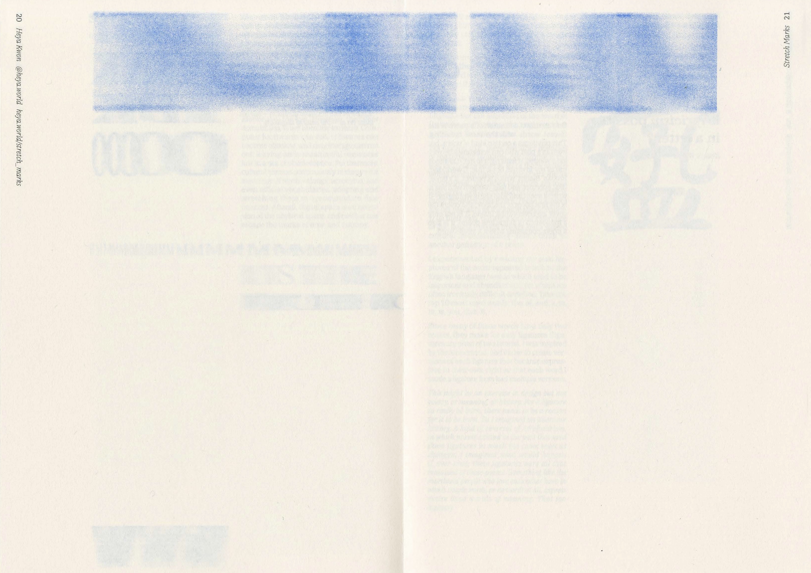
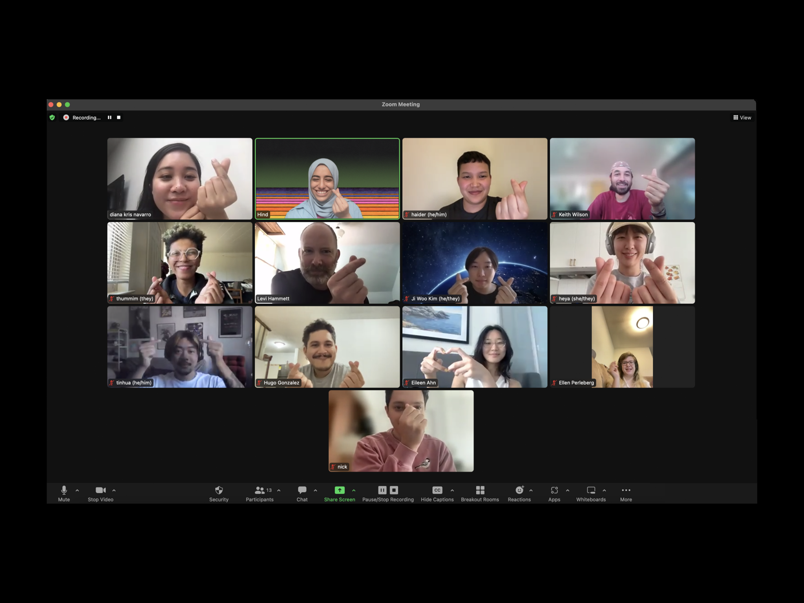
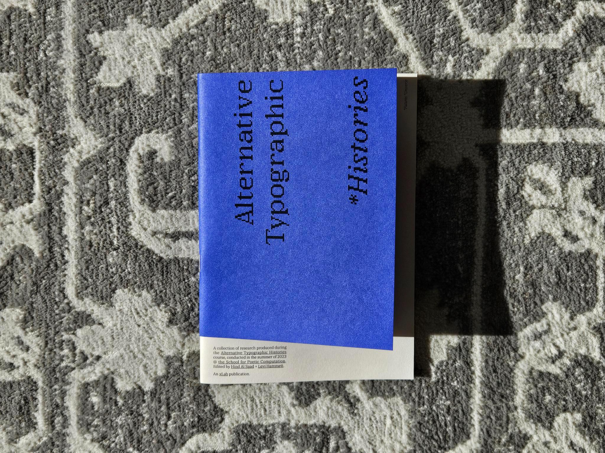

“Stretch Marks” is a series of typographic designs that explores the materiality of digitally typed texts and their gradual degradation. The designs are a result of an interactive p5.js code where letters are stretched and thus distorted according to the duration of the key press. Additionally, as the code uses the previous iteration of that letter as the new source, each repetition of a key causes the letter to further lose resolution and clarity. The texts that result from this process have been heavily disfigured and pixelated almost to — but not quite yet at — the point of illegibility.


Scans from the Alternative Typgoraphic Histories zine.
"Stretch Marks" was created during the "Alternative Typographic Histories" class, taught by Levi Hammett and Hind Al Saad, as part of School for Poetic Computation (SFPC). The final projects from the class were curated into a zine by Levi, Hind, and Xlab. All the images in the zine were laser printed in Doha, Qatar by Munamnama Press using blue ink on Insulation Pink French Paper. These pages are the scans of the riso printed version of selected "Stretch Marks" designs.
Reflection on Class

Hearts from my SFPC classmates <3.

Hearts from my SFPC classmates <3.
This summer, I had the privilege of participating in the School for Poetic Computation class “Alternative Typographic Histories”, led by instructors Levi Hammett and Hind Al Saad. This course introduced me and others to the intricate Western and Arabic typographic histories, while also inviting us to develop our own unique visual languages rooted in personal narratives. My encounter with the class and thus SFPC’s pedagogy has been surprising and transformative, both personally and artistically.
Looking back, I acknowledge that I could have embarked on a research and creative project for a similar topic on my own. However, what truly stood out about the SFPC experience was its emphasis on collective learning. Each one of us, including instructors, engaged in mutual learning and sharing of information – specifically, information that mattered to us. While I created an interactive coding project inspired by research in my East Asian heritage, a classmate wrote a manifesto on algospeak and counter surveillance languages related to their activism work, while another connected their grandfather’s handwriting to broader technological contexts like language processing. Each story shared in the class was thought-provoking, inspiring, and deeply personal.
As a fellow student phrased it, this class has been a lovely “collective daydreaming” that I am honored to have joined. Thanks to everyone who was in it, it has become a foundational stepping stone in my newfound passion for computational art and practice of imagining alternative histories. Not only that, it has taught me the importance of having a community of peers who are willing to be vulnerable together and supportive of each others’ creative paths. That just felt right, and I realized that my artistic journey wouldn’t make sense without it.🧃

Altnerative Typographic Histories zine curated by Levi, Hind, and Xlab.